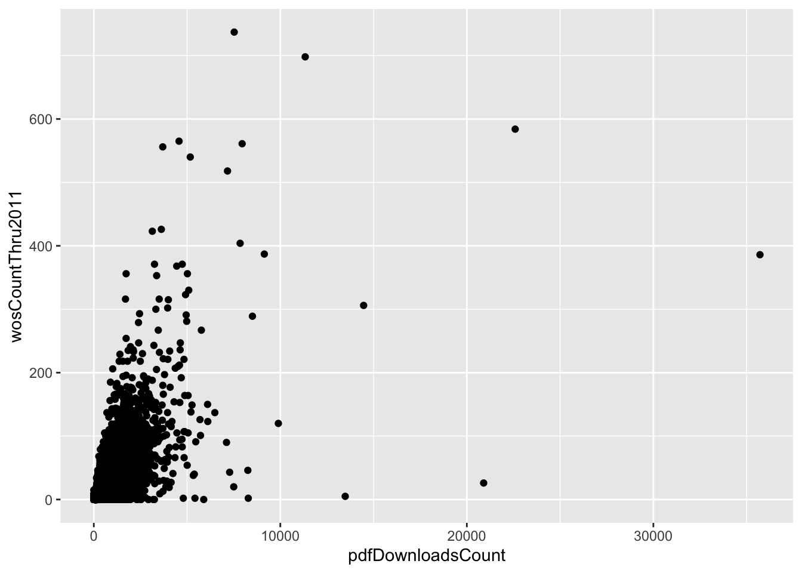
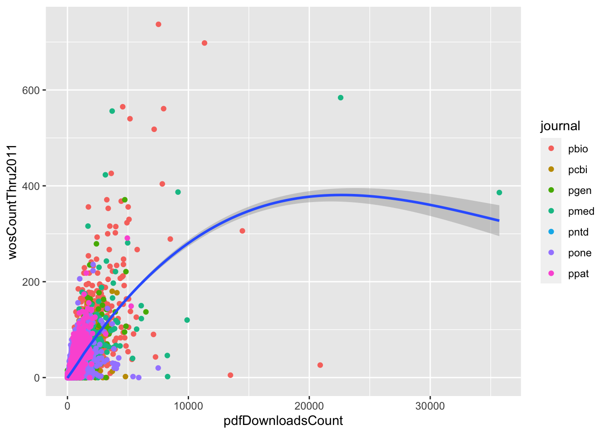
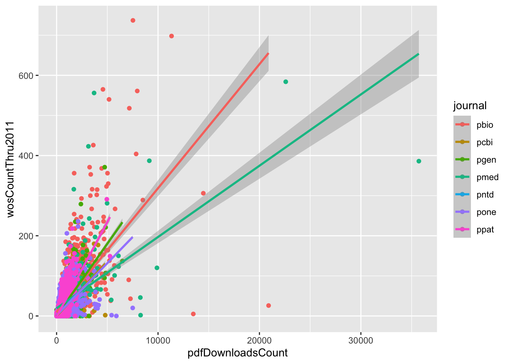
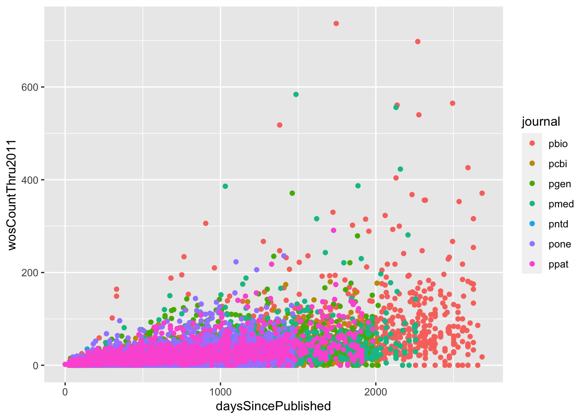
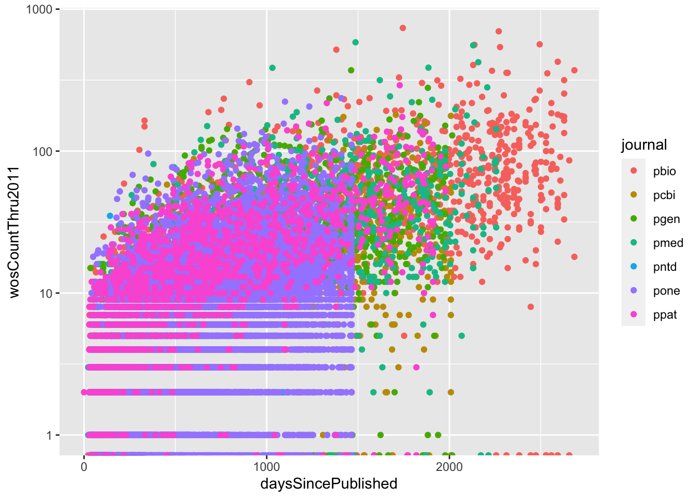
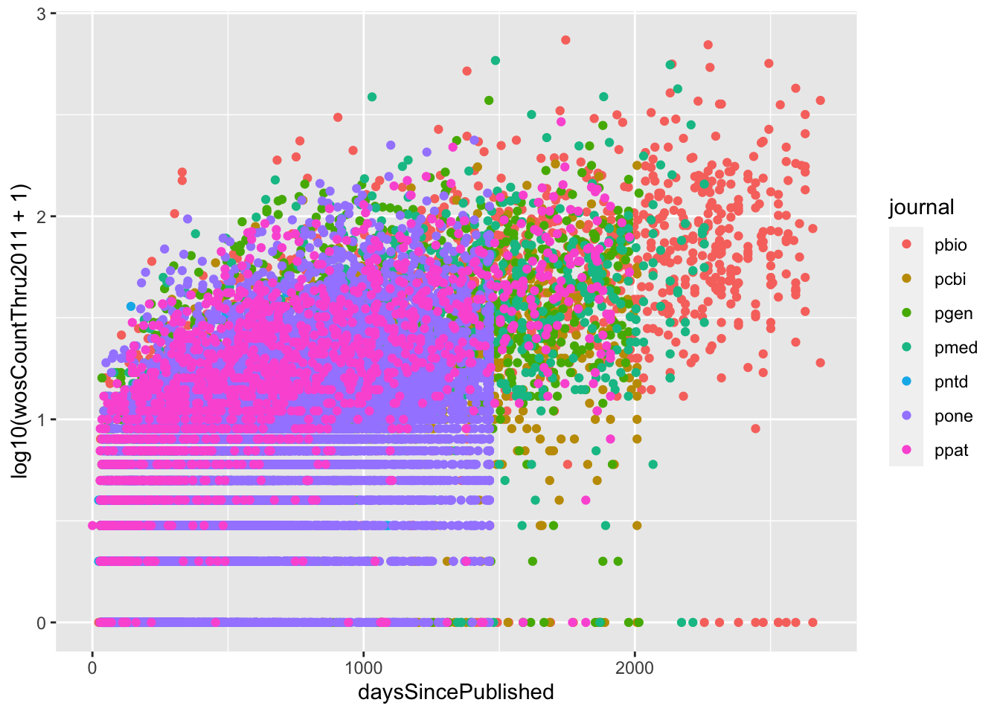
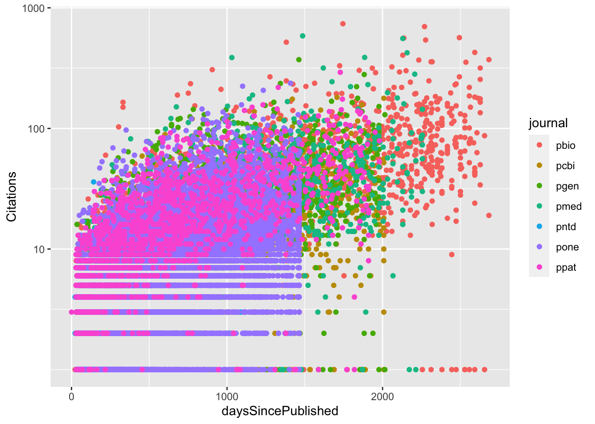

Chapter 5 Advanced Plotting
“The greatest value of a picture is when it forces us to notice what we never expected to see” -John Tukey
5.1 Setup
1. Install the tidyverse package.
## ── Attaching packages ──────────────────────────────────────────────────────────────────────────────────────── tidyverse 1.3.0 ──## ✓ ggplot2 3.3.0 ✓ purrr 0.3.4
## ✓ tibble 3.0.1 ✓ dplyr 0.8.5
## ✓ tidyr 1.0.3 ✓ stringr 1.4.0
## ✓ readr 1.3.1 ✓ forcats 0.5.0## ── Conflicts ─────────────────────────────────────────────────────────────────────────────────────────── tidyverse_conflicts() ──
## x dplyr::filter() masks stats::filter()
## x dplyr::lag() masks stats::lag()2. Filter data.
We will be using the publication dataset that we read into R in Chapter 2 as counts.
5.2 Review of ggplot2 basics
ggplot2 is a plotting package that makes it simple to create complex plots from data in a data frame. Graphics are built step by step by adding new elements. Adding layers in this fashion allows for extensive flexibility and customization of plots.
A plot can be divided into different fundamental parts:
Plot = data + aesthetics + geom
Required building blocks:
- data
- aesthetics - describe how data are mapped to colour, size, shape, location
- geoms - geometric objects like points, lines, shapes
Optional building blocks:
- facets - describes how panel plots should be constructed
- stats - statistical transformations like binning, quantiles, smoothing
- coordinates - describes the system in which the locations of the geoms will be drawn
- scales - what scale an aesthetic map uses (ex. male = red, female = blue)
To build a ggplot, we will use the following basic template that can be used for different types of plots:
Specify which data set to use for the plot using the
dataargument.Define a “mapping” (using the aesthetic (
aes) function), by selecting the variables to be plotted and specifying how to present them in the graph, e.g. as x/y positions or characteristics such as size, shape, color, etc.Add “geoms” – graphical representations of the data in the plot (points, lines, bars).
ggplot2offers many different geoms; common ones include:
geom_point()for scatter plots, dot plots, etc.geom_boxplot()for boxplots.geom_histogram()for histograms.geom_barplot()for barplots.geom_line()for trend lines, time series, etc.
Example:

Adding aesthetics:
p <- ggplot(research, aes(x = pdfDownloadsCount,
y = wosCountThru2011)) +
geom_point(aes(color = journal))
p
5.3 Statistics
The function geom_smooth() adds a loess curve to the data along with a 95% confidence interval.
p <- ggplot(research, aes(x = pdfDownloadsCount,
y = wosCountThru2011)) +
geom_point(aes(color = journal)) +
geom_smooth()
p## `geom_smooth()` using method = 'gam' and formula 'y ~ s(x, bs = "cs")'
If we move the colour to the base ggplot call, we get loess curves for each level of that factor.
p <- ggplot(research, aes(x = pdfDownloadsCount,
y = wosCountThru2011,
color = journal)) +
geom_point() +
geom_smooth()
p## `geom_smooth()` using method = 'gam' and formula 'y ~ s(x, bs = "cs")'
Check the help page for the function geom_smooth() for more information about how the curve is made. For example, to map a linear model onto the plot, you can choose method = "lm".
p <- ggplot(research, aes(x = pdfDownloadsCount,
y = wosCountThru2011,
color = journal)) +
geom_point() +
geom_smooth(method = "lm")
p## `geom_smooth()` using formula 'y ~ x'
5.4 Scales
Now let’s look at the relationship between days since published and citation count.
p <- ggplot(research, aes(x = daysSincePublished,
y = wosCountThru2011)) +
geom_point(aes(color= journal))
p
It looks like most of the citation counts are close to 0. We can quickly check the distribution of this variable using a qplot.
## `stat_bin()` using `bins = 30`. Pick better value with `binwidth`.
To control the plot axes, we use variants of the functions scale_x_* and scale_y_*.
p <- ggplot(research, aes(x = daysSincePublished,
y = wosCountThru2011)) +
geom_point(aes(color= journal)) +
scale_y_log10()
p## Warning: Transformation introduced infinite values in continuous y-axis
How can we fix this?
p <- ggplot(research, aes(x = daysSincePublished,
y = log10(wosCountThru2011 + 1))) +
geom_point(aes(color= journal))
p
Notice what this fix has done to the way the y-axis is labelled. To manually update the axis label, we can use the scale_y_continuous() function.
p <- ggplot(research, aes(x = daysSincePublished,
y = log10(wosCountThru2011 + 1))) +
geom_point(aes(color= journal)) +
scale_y_continuous(breaks = c(1,2,3), labels = c(10, 100, 1000))
p
5.5 Faceting
There are two functions to control how plots are divided into facets: facet_wrap() and facet_grid().
5.6 Themes
In addition to theme_bw(), which changes the plot background to white, ggplot2 comes with several other themes which can be useful to quickly change the look of your visualization. The complete list of themes is available at https://ggplot2.tidyverse.org/reference/ggtheme.html. theme_minimal() and theme_light() are popular, and theme_void() can be useful as a starting point to create a new hand-crafted theme.
The ggthemes package provides a wide variety of options (including an Excel 2003 theme). The ggplot2 extensions website provides a list of packages that extend the capabilities of ggplot2, including additional themes.
5.7 Color palettes
You can create your own color palettes using the colorRamp() or colorRampPalette() function.
colorRamp() returns a function that takes values between 0 and 1, indicating the extremes of the color palette.
colorRampPalette() returns a function that takes integer arguments and returns a vector of colours.
## [,1] [,2] [,3]
## [1,] 255 0 0## [,1] [,2] [,3]
## [1,] 127.5 0 127.5## [,1] [,2] [,3]
## [1,] 0 0 255## [1] "#FF0000" "#0000FF"## [1] "#FF0000" "#E2001C" "#C60038" "#AA0055" "#8D0071" "#71008D" "#5500AA"
## [8] "#3800C6" "#1C00E2" "#0000FF"Or, you can use the RColorBrewer package to get a premade colour palette.
There are three types of palettes: * Sequential * Diverging * Qualitative

5.8 Multiple plots
There are two useful packages for combining multiple plots: gridExtra and cowplot.
gridExtra has two useful functions: grid.arrange() and arrangeGrob(). However, these functions make no attempt at aligning the plot panels; instead, the plots are simply placed into the grid as they are, so the axes are not aligned. If axis alignment is required, the plot_grid() function of the cowplot package is better. We will try using both here.
5.8.1 The gridExtra package
5.8.2 The cowplot package
5.8.3 Saving plots
The easiest way to save a plot is using the ggsave() function.
5.9 Additional Resources
http://r-statistics.co/Top50-Ggplot2-Visualizations-MasterList-R-Code.html
- Mailing list: http://groups.google.com/group/ggplot2
- Wiki: https://github.com/hadley/ggplot2/wiki
- Website: http://had.co.nz/ggplot2/
- StackOverflow: http://stackoverflow.com/questions/tagged/ggplot
Cheatsheet